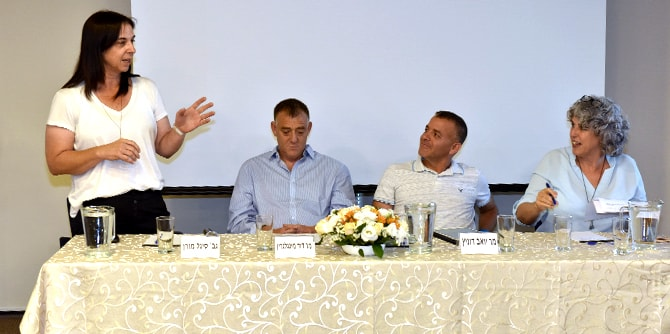
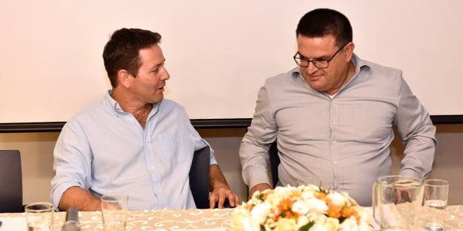

בימת מנדל בנגב התקיימה בהובלת עמיתי התוכנית למנהיגות בירוחם ורמת הנגב, המנוהלת על ידי
ד"ר יצחק (קיקי) אהרונוביץ' וד"ר נועה מילמן.
את האירוע פתחה ד"ר עדי ניר שגיא, מנהלת מרכז מנדל למנהיגות בנגב, שהדגישה בדבריה את חשיבותה של שותפות בהובלת שינוי ואת היכולת של המנהיג לשנות ולהשתנות. אהוד עדני, עמית בתוכנית, הציג תמה מרכזית שהעמיתים בוחנים במסגרת הלמידה בתוכנית: כיצד אפשר למנף את הקשרים ואת ההיכרות המוקדמות בין העמיתים לטובת פיתוח אזור ירוחם-רמת הנגב?
פרופ' ערן רזין, מומחה לשלטון מקומי, תכנון ופיתוח מהאוניברסיטה העברית, הרצה על שיתופי פעולה בין רשויות מקומיות בפריפריה, תוך הדגשת הצורך באיזון בין אינטרסים מקומיים של רשויות לבין הצורך ביעילות שכופה השלטון המרכזי.
נגה יוגב, עמיתה בתוכנית, הנחתה פאנל בנושא שיתופי פעולה מקומיים. בפאנל הדגישה סיגל מורן, ראשת המועצה האזורית בני שמעון, את החבירה המשותפת כאתגר מורכב בעל ערך לחיזוק האזור. דוד מינגלגרין, משנה למנכ"ל החברה הממשלתית לתיירות, דיבר על חשיבות היכולת של אזור להציע מגוון תיירותי כדי לקדם, לפתח ולשפר מיזמים תיירותיים. יואב דוניץ, לשעבר ראש מחלקת החינוך במצפה רמון, התייחס לאתגרי השותפות האזורית בחינוך ולמורכבות שימור הזהות הקהילתית.

הבימה, שהנחתה
זהבית יעקב, עמיתה בתוכנית, נחתמה בשיח עם
מיכאל ביטון, ראש מועצת ירוחם, ועם
ערן דורון, ראש המועצה האזורית רמת הנגב, ששיתפו במהלכים שהם מובילים ביחד ולחוד לטובת תושבי האזור במגוון תחומים. הם הדגישו את החשיבות של פיתוח מנהיגות אזורית שתצמח מהשטח ותפעל במחויבות לקידום המרחב, וכן את הצורך במנהיגות נחושה המבינה את חשיבות הראייה המשתפת.

{kind=link}
{kind=link}
{kind=link}